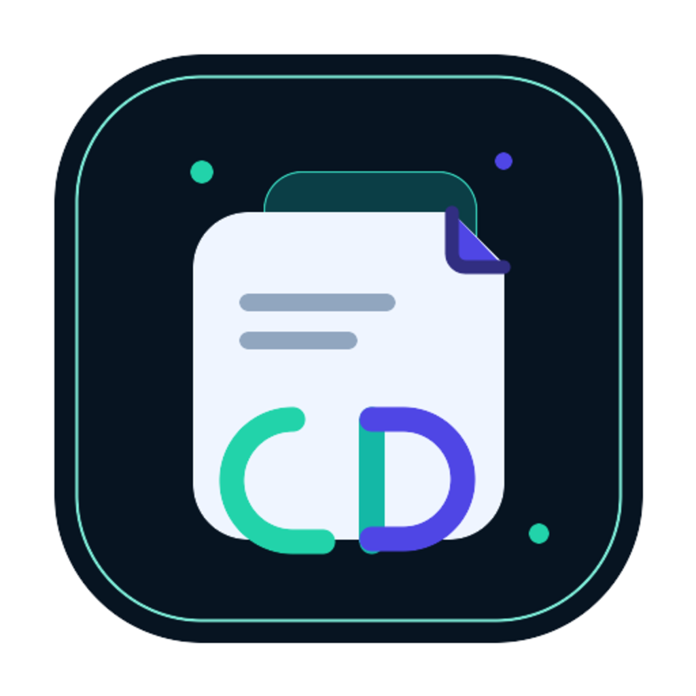
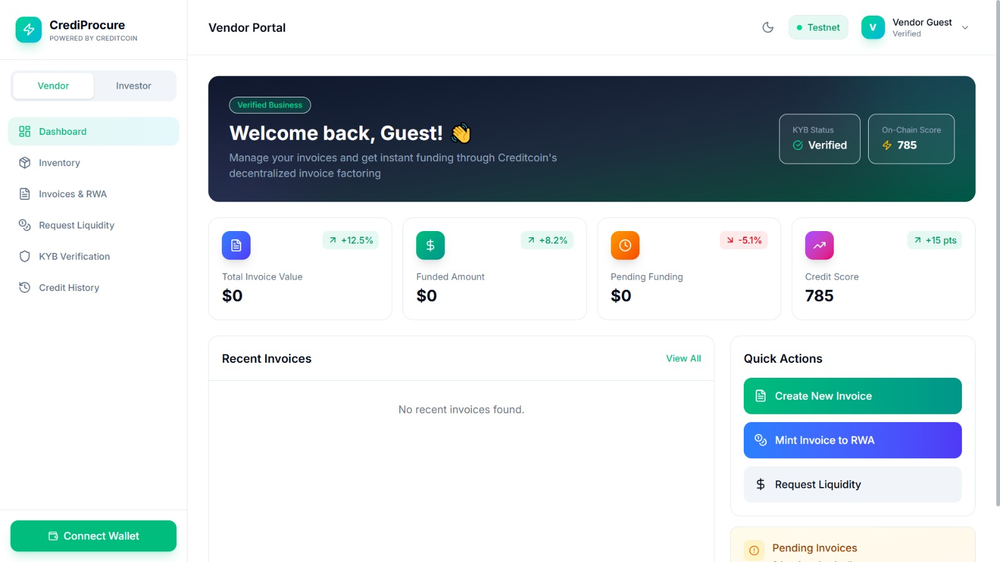

MVP pitch deck for Surge Discovery and ecosystem partners
CrediProcure
On-chain invoice financing for SMEs through tokenized real-world assets on Creditcoin.
What CrediProcure does
CrediProcure converts business invoices into programmable on-chain assets. Vendors unlock liquidity faster, while investors gain access to transparent, real-world-backed yield opportunities.
Current stage
Functional MVP with deployed smart contracts, live funding and repayment flows, wallet connectivity, and a full frontend app on Creditcoin testnet.
SMEs face a massive trade finance gap, while DeFi capital still lacks transparent real-world yield rails.
Vendor pain
- Cash flow is locked while businesses wait weeks or months to get paid.
- Traditional factoring is slow, expensive, and dependent on centralized intermediaries.
- Funding status, fees, and repayment records are often fragmented and opaque.
Investor pain
- Most DeFi yield remains crypto-native and disconnected from real-world business activity.
- It is difficult to access invoice-backed opportunities with transparent lifecycle data.
- Investors want programmable exposure to RWAs with auditable on-chain records.
CrediProcure tokenizes invoices as RWAs and connects vendors with direct or pooled on-chain liquidity.
Create
A vendor creates an invoice and sets funding terms such as amount, due date, and yield.
Mint
The invoice is minted as an ERC-721 RWA token with immutable lifecycle data on Creditcoin.
Fund
Investors fund specific invoices directly or supply capital through a shared liquidity pool.
Repay
Repayment is recorded on-chain and reflected in investor positions and vendor credit history.
For vendors
- Faster access to working capital.
- Transparent financing terms and repayment tracking.
- On-chain credit history built from protocol activity.
For investors
- Direct access to invoice-backed RWA opportunities.
- Transparent funding, repayment, and portfolio visibility.
- Flexible exposure through marketplace and liquidity pool models.
The MVP combines three core smart contracts with a live dashboard for vendors and investors.
InvoiceNFT.sol
Represents each invoice as an ERC-721 RWA token with vendor, amount, due date, yield rate, and status.LendingPool.sol
Manages pooled liquidity, direct invoice funding, withdrawals, and repayment flows between investors and vendors.MockStablecoin.sol
Provides a demo stablecoin for testnet operations and end-to-end validation during the MVP stage.User-facing capabilities
CrediProcure is already more than a concept: the MVP is shipped, testnet-deployed, and demoable end to end.

What already works
- Vendors can create invoice drafts and self-mint invoice RWAs on-chain.
- Investors can mint demo stablecoins, fund invoices, or deposit into the pool.
- Repayment updates are reflected in vendor credit history and investor portfolio views.
- Marketplace inventory, LP balances, funding history, and repayment activity are loaded from live contract reads and events.
- Hackathon-ready demo flow is live on Creditcoin testnet and documented in the repository.
Invoice financing is a strong RWA entry point because it ties real business activity to transparent on-chain capital flows.
Why this market matters
- SMEs are chronically underserved in working capital markets.
- Invoices are recurring business assets with clear payment cycles.
- RWA adoption needs products that are simple, auditable, and economically useful from day one.
Why Creditcoin
- Creditcoin is already positioned around real-world credit and finance use cases.
- CrediProcure fits naturally into the ecosystem's RWA and DeFi thesis.
- The protocol can evolve from MVP into a real financing layer with compliance, risk, and mainnet support.
Long-term opportunity
CrediProcure is designed as programmable infrastructure for trade finance. The long-term opportunity is not only invoice funding, but a broader network for SME financing, credit signaling, RWA distribution, and transparent capital formation across the Creditcoin ecosystem.
The MVP is complete. The next phase is making the protocol richer, more credible, and closer to mainnet readiness.
MVP shipped on testnet
Invoice minting, direct funding, pool participation, repayment flow, dashboard UX, and live on-chain reads.
Protocol expansion
Multi-investor syndication, richer analytics, stronger risk scoring, enhanced pool accounting, and indexer support.
Mainnet readiness
Production stablecoin integration, off-chain invoice verification, compliance layers, governance, and launch preparation.
CrediProcure is built to turn invoice financing into a transparent, programmable RWA rail for real business liquidity.
Builder
Pandu Darma Anugrah
Independent full-stack engineer and Web3 builder focused on AI systems, DeFi infrastructure, and real-world on-chain financial products.
Current ask
- Discovery and ecosystem visibility for the MVP.
- Feedback from RWA, DeFi, and Creditcoin ecosystem partners.
- Strategic support for roadmap validation, protocol design, and next-stage growth.
Repository, demo, and documentation are available through the project profile and public links.